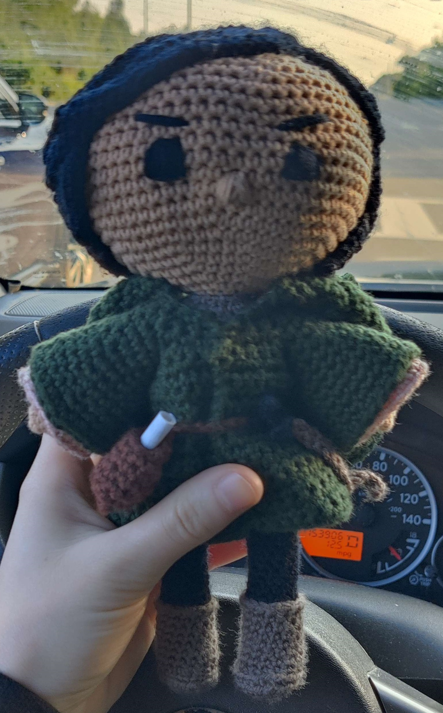

Willy Wonka

Crochet Queen!


Favorite character from my favorite game. I love Star Fetchers so much bro

Nyan Cat scarf bc apparently im stuck in 2015


Lacework took forever bruh I'm not doing that ever again. Cute asf tho!
MOST UNDERRATED GOATED MOVIE
My favorite Doctor hands down. Might do 12 next.
Going through a Harry Potter phase
Wow she's literally me!

First sucessful top I'm actually hella proud of it
My first project with DK yarn because I wanted it to be pocked sized. Took me around 20 hours and I had to make the tunic twice to get it right. Based on my favorite character from the Dying Earth book saga.
Gift for my friend! Wouldn't be caught DEAD watching anime tyvm🤢
A little picture with flowers in it for my little cousin :). This one only took me a few hours
First tapestry crochet
An easter basket with an egg and a peep for my mom :) It was a quick project, it probably took around 2 hours total
Bag for my friend :) Took 5ish hours
For my Castle friends :)
Happy Halloween!
Going through a Red Dead phase...
My first doll >:) I didn't have any flesh colored yarn so she looks a bit pale... Just pretend she has albinism lol. I think this took me around 8 hours for the doll + hair and about 2 hour for the dress + bag.

Yes ik what it looks like, get your head out of the gutter bro
First clothes I made. Took around 10 hours and 2 retries but I got there eventually lol